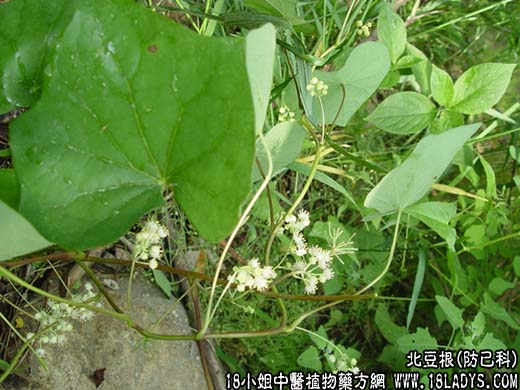

【中药概述】北豆根为防己科植物蝙蝠葛的干燥根茎，苦，寒；有小毒。归肺、胃、大肠经。 清热解毒，消肿止痛：适用于咽喉肿痛，红赤，发热，肺热咳嗽等症。 【临证应用】治咽喉红肿赤痛。用本品与金银花，连翘，牛子，射干，玄参，麦冬等同用。 【化学成分】含蝙蝠葛碱、山豆根碱、青藤碱、粉防己碱等。 【用量用法】9——20g，水煎服，或入丸、散剂。 【注】本品呈细长圆柱形，有分枝。表面黄棕色。外皮易脱落，内部呈淡黄色。断面纤维性，可见放射状纹理，木部黄色，髓部类白色。
本文解释权归中药大全，本文地址： https://www.daquan.com/post/1887.html